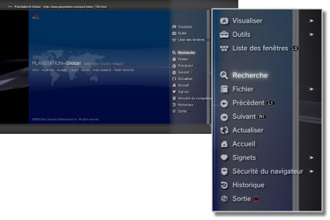
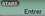

Réseau > Opérations de base du navigateur Internet
Opérations de base du navigateur Internet
Affichage de l'écran

(1) |
Titre de la page |
|---|---|
(2) |
Adresse de la page |
(3) |
Icône SSL |
(4) |
Icône Occupé |
(5) |
Icône Sécurité du navigateur |
(6) |
Adresse cible du lien |
(7) |
Pointeur |
Méthodes de défilement
| Touches de navigation | Pour déplacer le pointeur vers un lien. |
|---|---|
| Joystick droit | Pour faire défiler dans le sens souhaité. |
Utilisation du menu
Appuyez sur la touche  pour afficher le menu où vous pouvez effectuer diverses opérations et paramètres. Appuyez sur la touche pour afficher ou masquer le menu d'options. Les éléments du menu diffèrent dans le mode navigation et dans le mode fenêtre.
pour afficher le menu où vous pouvez effectuer diverses opérations et paramètres. Appuyez sur la touche pour afficher ou masquer le menu d'options. Les éléments du menu diffèrent dans le mode navigation et dans le mode fenêtre.

Saisir une adresse (URL).
Lorsque vous appuyez sur la touche START (mise en marche), un clavier s'affiche pour vous permettre de saisir une adresse. Si vous sélectionnez

une fois l'adresse saisie, le clavier se referme et la page correspondant à cette adresse s'ouvre.Copie de texte
Vous pouvez copier du texte à partir d'une page du navigateur Internet.
1. |
Utilisez le joystick gauche pour déplacer le pointeur jusqu'à l'emplacement du texte que vous souhaitez copier, puis appuyez sur la touche |
|---|---|
2. |
Maintenez la touche |
3. |
Relâchez la touche |
4. |
Sélectionnez [Copier] dans le menu qui s'affiche. |
Conseils
- Vous pouvez coller le texte copié à l'aide de la touche [Coller] du clavier virtuel.
- Vous pouvez sélectionner [Recherche] à l'étape 4 pour effectuer une recherche Internet en utilisant le texte copié comme mot-clé.
Impression d'une page Web
Pour utiliser cette fonctionnalité, vous devez d'abord configurer une imprimante en sélectionnant  (Paramètres) > [Paramètres imprimante] > [Sélection imprimante].
(Paramètres) > [Paramètres imprimante] > [Sélection imprimante].
1. |
Ouvrez la page Web que vous souhaitez imprimer, puis appuyez sur la touche |
|---|---|
2. |
Sélectionnez [Fichier] > [Imprimer cet écran]. |
3. |
Vérifiez les paramètres d'impression. |
4. |
Sélectionnez [Imprimer]. |
Conseil
Les imprimantes pouvant être utilisées varient selon le pays ou la région. Pour plus d'informations, visitez le site Web SIE de votre région.
Affichage de plusieurs fenêtres
Vous pouvez ouvrir simultanément plusieurs fenêtres. Le pointeur étant placé sur le lien, maintenez enfoncée la touche  jusqu'à ce que le lien s'ouvre dans une fenêtre différente.
jusqu'à ce que le lien s'ouvre dans une fenêtre différente.